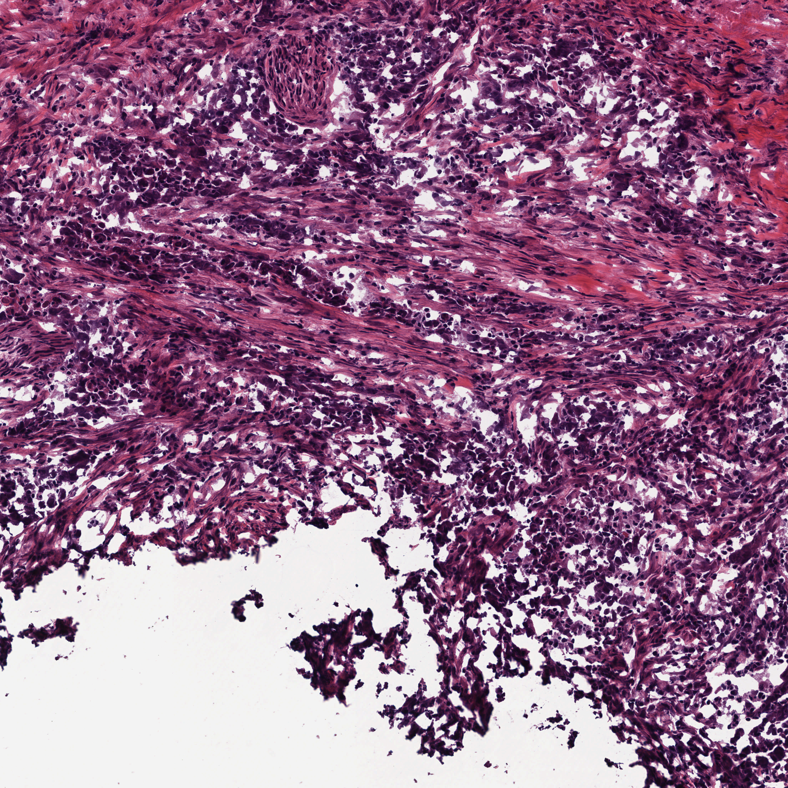
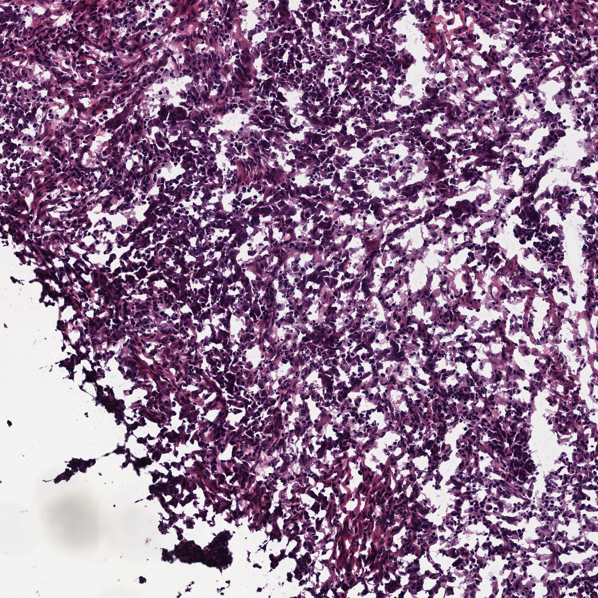

Visual Evidence
Review ROI thumbnails, WSI overviews, zooms, and segmentation overlays.


Each card opens in the inspector with source path, segmentation fractions, zoom lineage, and related evidence.
MedGemma rounds are shown as morphology evidence, separated from final report generation.
No morphology rounds found.
KEEP hits are supporting or differential knowledge, not direct visual observations.
A syndrome characterized by myxomas, spotty pigmentation of the skin and endocrine overactivity.
A syndrome characterized by myxomas, spotty pigmentation of the skin and endocrine overactivity.
A syndrome characterized by myxomas, spotty pigmentation of the skin and endocrine overactivity.
A syndrome characterized by myxomas, spotty pigmentation of the skin and endocrine overactivity.
A directory-style timeline. Click a step to inspect the exact checkpoint payload without leaving the page.
01_roi_selection
02_site_prediction
04_segmentation_qc
06_preliminary_diagnosis_sufficiency
07_reinspection
09_slots_claim_verification
10_report
Claims should be supported, weak, not assessable, or removed. The evidence column links claims back to figures or non-image evidence.
| Claim | Status | Field | Statement | Evidence |
|---|---|---|---|---|
| supported | site | bladder / urothelial tissue The site is explicitly provided as 'bladder / urothelial tissue' in the evidence graph with high confidence. | ||
| weak | primary_diagnosis | high-grade urothelial carcinoma The morphology (solid sheets, necrosis, high grade) is consistent with high-grade urothelial carcinoma, and the site is known to be bladder. However, definitiv... | ||
| supported | broad_type | carcinoma The images show cohesive sheets of atypical cells with high nuclear-to-cytoplasmic ratios and necrosis, which are characteristic features of carcinoma. | ||
| weak | subtype | urothelial carcinoma Given the known bladder site and the high-grade solid morphology, urothelial carcinoma is the most likely diagnosis, but cannot be confirmed without IHC. | ||
| supported | malignancy | malignant The presence of extensive necrosis, high cellularity, and nuclear atypia confirms malignancy. | ||
| supported | grade | high grade The tumor exhibits marked nuclear pleomorphism, hyperchromasia, and extensive necrosis, which are hallmarks of high-grade malignancy. | ||
| supported | necrosis | present, extensive geographic necrosis Visual inspection shows large areas of eosinophilic debris and loss of cellular detail consistent with geographic necrosis. Segmentation stats confirm signific... | ||
| weak | invasion | invasive features likely present given the solid growth pattern and necrosis, though specific invasion interface is not clearly visualized in these ROIs The aggressive features (necrosis, solid growth) strongly suggest invasion, but the specific interface with stroma or muscle is not clearly visualized in these... | ||
| supported | ihc_molecular | not assessable from H&E images IHC and molecular status cannot be determined from H&E images alone. | ||
| supported | tumor_architecture | diffuse sheets and solid nests of neoplastic cells with extensive geographic necrosis The images clearly display diffuse sheets and solid nests of neoplastic cells interspersed with extensive areas of necrosis. | ||
| supported | cytology | small to medium-sized cells with scant cytoplasm, hyperchromatic nuclei, and high nuclear-to-cytoplasmic ratio High-power views show cells with scant cytoplasm, hyperchromatic nuclei, and a high nuclear-to-cytoplasmic ratio. | ||
| supported | stroma_inflammation | scant stroma visible due to high cellularity and necrosis The tumor is highly cellular with extensive necrosis, leaving very little visible stroma. Segmentation stats show low connective tissue fractions (e.g., 15.7%... |
These are the ROIs returned by the grade-support branch. A later diagnostic selection may also reuse a listed ROI.

ROI: TCGA-FD-A5BS-01A-02-TSB.21A9159B-7DD1-4F26-951E-C99C004C1956_foundation_x33392_y12512_l0_w4096_h4096
Source slide: TCGA-FD-A5BS-01A-02-TSB.21A9159B-7DD1-4F26-951E-C99C004C1956
ROI coordinates: x=33392, y=12512 (level-0 origin); width=4096, height=4096 (pixels at ROI level 0)
This ROI is not listed in the final diagnostic selection.
Input evidence reserved for the grade-only branch. This display adds no diagnosis or grade.

ROI: TCGA-FD-A5BS-01A-02-TSB.21A9159B-7DD1-4F26-951E-C99C004C1956_foundation_x36464_y14560_l0_w4096_h4096
Source slide: TCGA-FD-A5BS-01A-02-TSB.21A9159B-7DD1-4F26-951E-C99C004C1956
ROI coordinates: x=36464, y=14560 (level-0 origin); width=4096, height=4096 (pixels at ROI level 0)
This ROI is not listed in the final diagnostic selection.
Input evidence reserved for the grade-only branch. This display adds no diagnosis or grade.